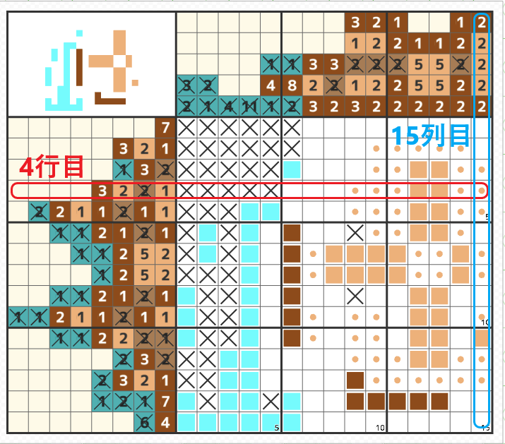

行と列について

- 行は横の並びを表すので図の赤線の行は上から数えて4行目となります。
「行」という漢字の右上に「＝」があり、横に二本の線があることから横に一本、二本、三本と数えることを一行、二行、三行と数えると憶えましょう。 - 列は縦の並びを表すので図の青線の列は左から数えて15列目となります。
「列」という漢字の右に「⺉」があり、縦に二本の線があることから縦に一本、二本、三本と数えることを一列、二列、三列と数えると憶えましょう。 - 4行目、15列目のマスの位置をここでは略して「4-15」と表します。